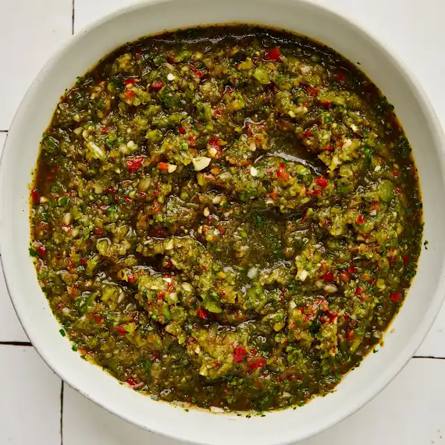

This all purpose seasoning is meant to elevate your savory meals such as beans, soups, stews or a marinade.
STEP ONE
Combine the chopped yellow onion, green onions, green pepper, red pepper, garlic cloves, cilantro, and culantro in a large mixing bowl. Working in batches, blend about one-third of the vegetables at a time in a food processor or blender with about ¼ cup water to create a very finely chopped sauce or paste, similar to pesto or chimichurri. (You may not need all the water.)STEP TWO
Transfer each batch of sofrito to another mixing bowl. Once all of the sofrito is blended, season with salt, black pepper, sazón, and olive oil. Stir well and portion out into small plastic containers or ice cube trays. The sofrito keeps in the fridge for about one week or in the freezer for up to six months (once frozen, transfer cubes to zip-top freezer bags for easy use).